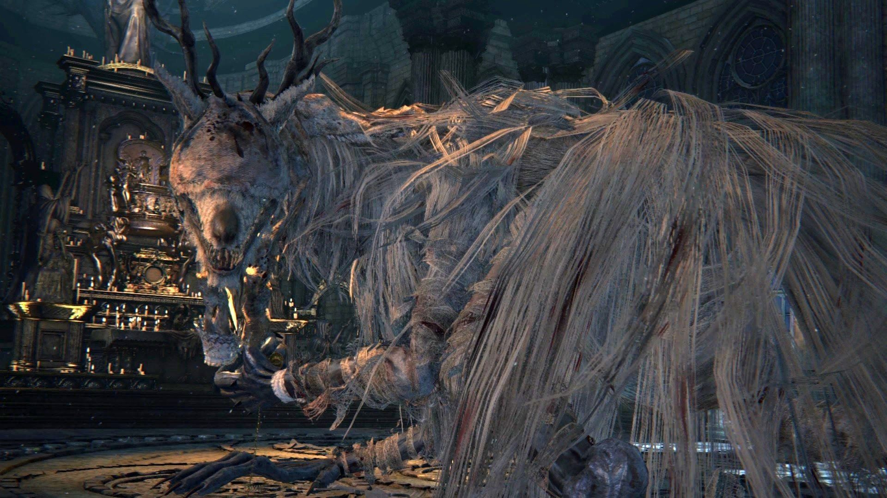
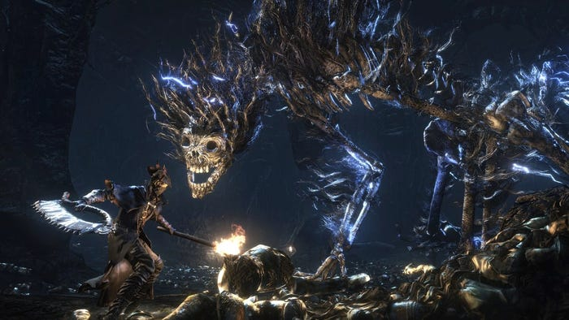
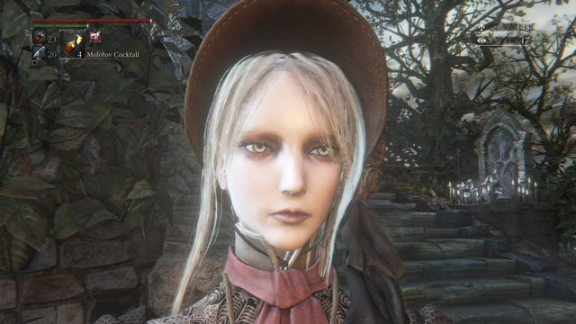

Bloodborne (ブラッドボーン) es un videojuego de rol de acción dirigido por Hidetaka Miyazaki, desarrollado por From Software y JapanStudio distribuido por Sony Computer Entertainment para la plataforma de PlayStation 4.12 El videojuego sigue las acciones del personaje del jugador, el Cazador, a través de Yharnam, una ciudad ficticia de estilo victoriano, cuyos habitantes han sido afectados con una enfermedad de transmisión sanguínea anormal. Al despertar en Yharnam durante la noche de «la caza» tras recibir un tratamiento de la conocida «sangre milagrosa», el Cazador busca algo conocido solo como paleblood ("sangre pálida" en español) para terminar la cacería
El videojuego cuenta con una vista en tercera persona y su jugabilidad se enfoca en el combate basado en armas y la exploración. Los jugadores luchan contra enemigos bestiales, entre ellos jefes, usando elementos tales como armas blancas y de fuego, viajando a través de la historia, explorando las diferentes áreas del videojuego, interaccionando con los PnJs, además de descubrir y desentrañar los numerosos misterios de ese mundo.
Fue anunciado oficialmente en el evento Electronic Entertainment Expo 2014 de Sony el 9 de junio de 2014, siendo publicado finalmente de manera internacional a finales de marzo de 2015 recibiendo aclamación de la crítica especializada.4 Muchos críticos aplaudieron la atmósfera y aspecto visual del videojuego, su diseño de mundo interconectado, el diseño de los personajes, en particular el de los enemigos, el desafiante juego de ritmo rápido, la historia intrigante y la banda sonora, que algunos incluso promocionan como «gloriosa». Inconvenientes iniciales de frame rate y extensos tiempos de carga, sin embargo causaron que el videojuego generara algunas críticas. En abril de 2015, el videojuego había vendido más de un millón de copias.
Ha sido condecorado con el Premio de Excelencia (compartido con otros 14 títulos), otorgado por la revista Famitsū de la distribuidora Enterbrain a aquellos videojuegos lanzados en Japón entre el 1 de enero y el 31 de diciembre de 2015.
Bloodborne presenta elementos de RPG-acción en tercera persona y primera persona, similar a los anteriores videojuegos dirigidos por Hidetaka Miyazaki, Demon's Souls y Dark Souls.6 Los controles son un tanto peculiares a diferencia con otros títulos similares, como Diablo III. Los jugadores trazan su camino a través de diferentes lugares mientras luchan contra enemigos variados incluyendo jefes,7 recolectan diferentes tipos de objetos útiles que tienen varios usos posibles, interaccionan con PnJs,8 abren nuevos atajos y continúan a través de la historia del argumento. El combate requiere un ritmo acelerado y necesita de un enfoque ofensivo con el fin de que los jugadores puedan combatir contra las densas hordas de enemigos. El personaje del jugador es ágil y es capaz de realizar extensivos ataques de embestidas alrededor de los enemigos mientras utiliza la característica lock on. El nuevo estilo de juego «riesgo-versus-recompensa» se enfatiza a través del sistema de recuperación de vitalidad de Bloodborne, que le permite al jugador, dentro de un pequeño espacio de tiempo específico, recuperar partes de la vitalidad perdida contraatacando a los atacantes del jugador.
Los jugadores pueden regresar a una zona segura, conocida como Sueño del Cazador, por medio de unas lámparas específicas repartidas por todos los niveles. Al hacerlo se regenera su barra de vitalidad, pero repoblara de monstruos los niveles del videojuego. Estas lámparas también sirven como puntos de control (checkpoints) del videojuego; el jugador volverá a la última lámpara activada cuando su personaje muera. El Sueño del Cazador ofrece al jugador algunas de las características básicas del videojuego. Los jugadores pueden comprar artículos útiles, tales como prendas de vestir de los Mensajeros usando Ecos de Sangre o Insight, subir de nivel su personaje al hablar con la muñeca, o actualizar sus armas en el taller.
De manera similar que en el videojuego Dark Souls, los enemigos dejan caer puntos de experiencia en la forma de Ecos de Sangre. Si el personaje del jugador llegara a morir, sus Ecos de Sangre se perderán en el lugar específico de su muerte. Si fuera capaz de regresar a ese punto nuevamente, pueden recuperarlos. Sin embargo, si el jugador muere por segunda vez en su trayecto para recuperar sus Ecos de Sangre perdidos, estos se perderán para siempre. Los Ecos de Sangre también pueden ser capturados por un adversario, normalmente identificado por sus ojos azules resplandecientes. Derrotar a este adversario devolverá los Ecos de Sangre perdidos. Si ningún adversario sostiene los Ecos de Sangre, estarán en el suelo cerca de la ubicación de la muerte del personaje del jugador.14 Insight es una forma secundaria de divisas; que se puede gastar para comprar artículos y dependiendo del nivel de Insight del jugador, el mundo cambiara de muchas maneras diferentes. Cuando el jugador llega a un nivel específico de Insight, algunos PnJs o enemigos podrían ya no estar presentes, el personaje del jugador podría empezar a escuchar diferentes sonidos (como un bebé llorando y susurros misteriosos), o los patrones de ataque de los enemigos pueden cambiar. Insight puede adquirirse al encontrar y derrotar a los jefes o al usar objetos que otorguen Insight
 Tenemos los siguientes objetos